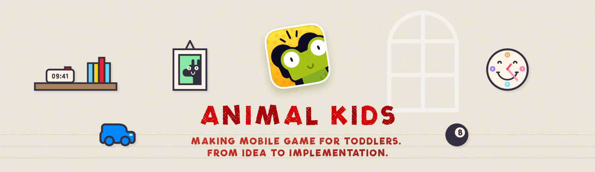
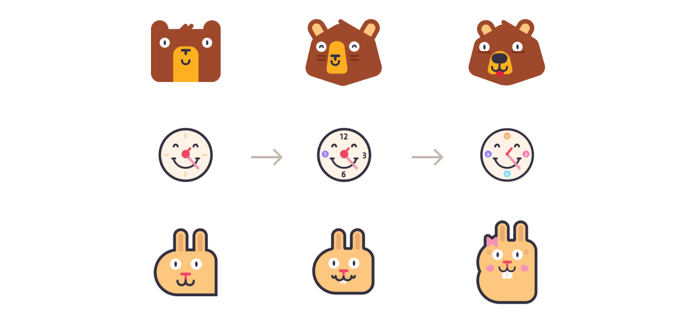
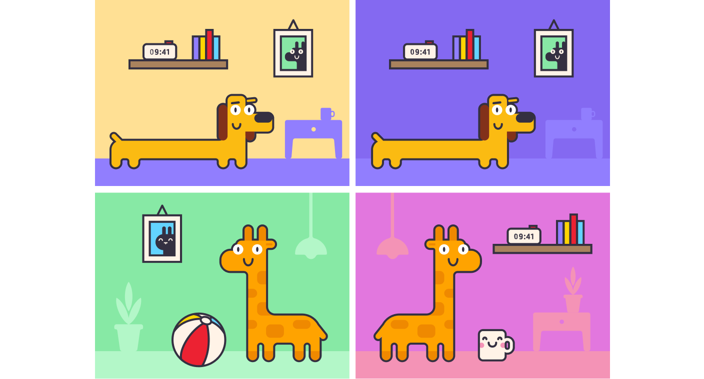
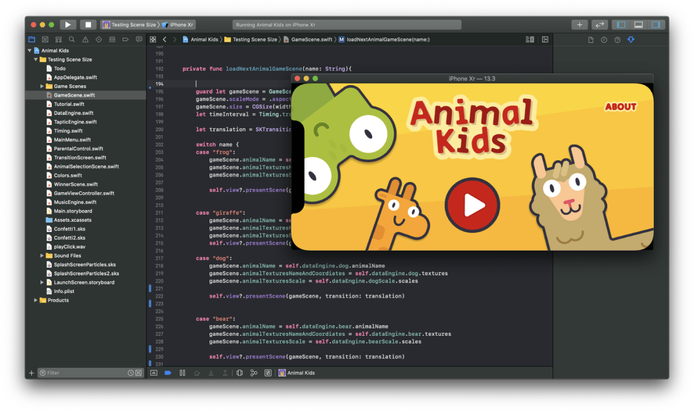
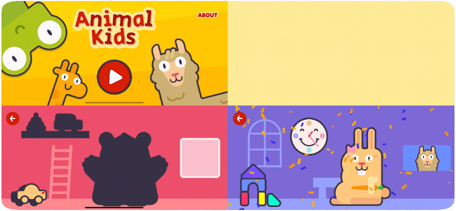

Making Mobile Game for Toddlers

Project goal
As a side project I wanted to create a game that could be used to entertain toddlers. I wanted to learn how to code using a simple and fun project. By the way, this is my first project with SpriteKit as a developer, so I wanted to keep the mechanics as simple as possible.
Researching target audiences
Despite the fact that the game is designed for children under 4 years of age, it was necessary to take into account the adult audience of parents. After all, parents decide what their children play. Parents give their children their smartphones when they need some time to themselves (sometimes it happens). Therefore, the game should be simple enough for a child to play without asking a parent for help.
Since I already had a vision of what I wanted to create, I started with a simple concept that allowed me to play with the idea in Figma before I started writing the code.

Process
After analyzing the target audience, it became clear that some young children can’t read. So the game should be as easy to use as possible, with no text and more visual cues. The child should be able to understand how to interact with the game without reading or asking an adult for help.
I created a simple concept in Xcode to find the right size for the objects and their placement on the screen. Along the way, I worked on character assets to make the animals look unique and cute.

Experimenting with the design of the interior layout and how it affects the visibility of the characters, to make sure the contrast is good.

Development
I decided that the game would have no text, no extra screens, and no menus. On the main screen there is a button to start the game, which looks like a play button on a video player (usually familiar to children). This shape is also used by other games on the market for this age group.

With each new build, I tested early versions of the prototypes on my daughter and her friends to see how they reacted and how I could improve them.


After completing a level, a soft female voice praises a child to bring a nice feeling of some achievement. Similar to parents praising their child. Transition between levels is done by tapping anywhere on the screen. The transition to the next level is done by the animated button that attracts attention and can’t be missed.
Results
The game was successfully released on the App Store with ★★★★★ 4.7 • 33 ratings.
Learnings
The research part of the project was the easiest part, since I already had experience in that area. The most challenging part was the code, I used SpriteKit for the first time and learned a lot about this API.
The most challenging part of the game was to track an action that object was drag and dropped near the target, even if the a puzzle piece was not dropped pixel-to-pixel at the target area I’m applying correction with animation. There are 4 different types of animation that are triggered depending on where the user made a drop:
- from top left corner of a target
- from top right corner of a target
- from bottom left corner of a target
- from bottom right corner of a target
Today, after I leaned how to use PaperJS API, I’d change the code to just calculate a distance from the target to the drop position. But I didn’t know that back then, and I’m still glad that my wrong way is a working solution. Because from the user’s perspective, they don’t see non-optimal code, they see optimal results of a game mechanic.